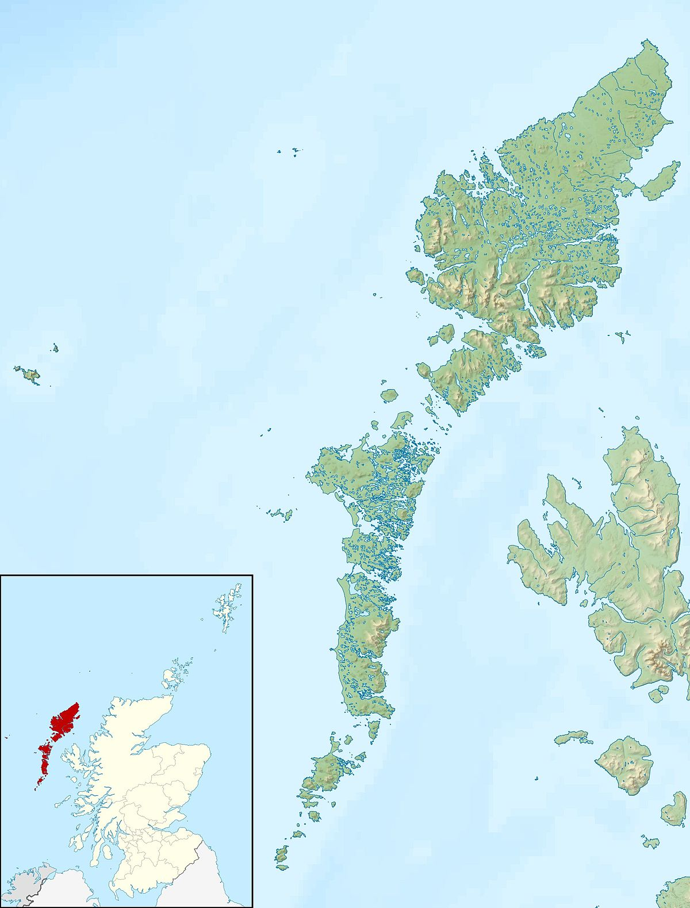

Panel Data Analysis I¶
In this section we define the general methodological and substantive issues associated with panel data.
We conclude with a consideration of the key questions a researcher should ask before undertaking analysis of panel data.
Introduction¶
The analysis of repeated contacts data is known as panel data analysis.
Recall that repeated contacts data captures information on your units of analysis more than once. As a result, observations are nested or clustered within units e.g., observations of pupils’ exam results are nested within schools.
Methodological implications of panel data¶
The use of panel data implies the potential for the violation of an important regression assumption: error terms are independent of each other (Mehmetoglu & Jakobsen, 2016)
In panel data a unit’s own observations are often interdependent, meaning they are more likely to be similar to each other than the observations for other units in the panel.
Independence of error term¶
Recall one of the core assumptions of linear regression:
The variation in our outcome that is left unexplained (\(\epsilon\)) should not be correlated with any of the explanatory variables in the model.
If the covariance is not equal to zero, then the observations for each unit i are serially correlated, a circumstance also known as autocorrelation.
What this means in practice is the value of a variable at time t predicts the value of the same variable at time t + k for a given unit i (where k represents another time period in which unit i is observed).
Autocorrelation can give rise to heteroscedasticity, which very often results in the under-estimation of standard errors in regression models.
It can also lead to the much more serious issue of biased coefficients.
Summary of issues¶
Panel data contain observations nested within units.
The interdependence of observations often violates a key assumption of linear regression (independence of errors).
Ignoring this interdependence when estimating your statistical model can lead to two problems:
Under-estimation of the uncertainty surrounding the coefficients (inefficiency).
Incorrect estimates of the coefficients (bias).
Inefficiency leads to under-estimated standard errors and potential false positive tests of statistical significance.
Bias leads to incorrect inferences about the magnitude and direction of the effects of the explanatory variables in your model.
Methodological benefits of panel data¶
Hold on, this entire training course is predicated on there being some advantage to using panel data over cross-sectional data!
Correct, and here it is…
The problem of inefficient estimates can at least be ameliorated when using cross-sectional data (e.g., robust or clustered standard errors).
The problem of biased coefficients is very difficult to solve when using cross-sectional data.
This because it is very difficult to find a data set that contains all of the explanatory variables you need for your model –> omitted variable bias.
Let’s see what happens when omitted variable bias is present; that is, we have not specified the model correctly:
clear
capture set seed 1010
quietly set obs 10000
gen x1 = rnormal(1, 20)
gen x2 = x1 + rnormal(1, 10)
gen eterm = rnormal()
gen y = 2 + x1 + x2 + eterm
l y x1 x2 in 1/10
+-----------------------------------+
| y x1 x2 |
|-----------------------------------|
1. | 33.65662 19.14529 13.26858 |
2. | -49.57088 -27.96305 -23.022 |
3. | 13.81728 5.44816 4.905838 |
4. | -18.24858 -4.415646 -16.3728 |
5. | 25.3734 7.114079 16.31598 |
|-----------------------------------|
6. | 41.18281 11.9115 26.35516 |
7. | -45.91599 -18.31569 -28.86481 |
8. | -17.55372 -6.058764 -11.95182 |
9. | 47.78559 19.07098 27.25243 |
10. | 11.26871 8.339461 1.703953 |
+-----------------------------------+
First, we estimate a properly specified model:
regress y x1 x2
Source | SS df MS Number of obs = 10,000
-------------+---------------------------------- F(2, 9997) > 99999.00
Model | 16796126.4 2 8398063.21 Prob > F = 0.0000
Residual | 10024.3942 9,997 1.00274025 R-squared = 0.9994
-------------+---------------------------------- Adj R-squared = 0.9994
Total | 16806150.8 9,999 1680.78316 Root MSE = 1.0014
------------------------------------------------------------------------------
y | Coef. Std. Err. t P>|t| [95% Conf. Interval]
-------------+----------------------------------------------------------------
x1 | 1.00037 .0011332 882.78 0.000 .9981488 1.002591
x2 | .9994168 .0010176 982.18 0.000 .9974221 1.001411
_cons | 1.989778 .0100956 197.09 0.000 1.969989 2.009568
------------------------------------------------------------------------------
Now let’s estimate a model that excludes one of the explanatory variables:
regress y x1
Source | SS df MS Number of obs = 10,000
-------------+---------------------------------- F(1, 9998) > 99999.00
Model | 15828807.8 1 15828807.8 Prob > F = 0.0000
Residual | 977343.026 9,998 97.7538533 R-squared = 0.9418
-------------+---------------------------------- Adj R-squared = 0.9418
Total | 16806150.8 9,999 1680.78316 Root MSE = 9.8871
------------------------------------------------------------------------------
y | Coef. Std. Err. t P>|t| [95% Conf. Interval]
-------------+----------------------------------------------------------------
x1 | 1.997809 .0049647 402.40 0.000 1.988077 2.007541
_cons | 3.076904 .0990786 31.06 0.000 2.88269 3.271118
------------------------------------------------------------------------------
Notice how the coefficient for x1 has been inflated? This is because x1 and x2 are correlated (by definition), and therefore x1 “soaks up” some of the variation in y that is explained by x2 (Gelman and Hill, 2007).
corr x1 x2
corr y x2
(obs=10,000)
| x1 x2
-------------+------------------
x1 | 1.0000
x2 | 0.8962 1.0000
(obs=10,000)
| y x2
-------------+------------------
y | 1.0000
x2 | 0.9762 1.0000
So why panel data?¶
As the simple example above demonstrates, one way of solving omitted variable bias is to include the omitted explanatory variable(s)!
This can be difficult to achieve in practice, as many of these variables may not be captured by the data set, or even possible to record at all (Mehmetoglu & Jakobsen, 2016).
If certain assumptions hold, the use of panel data allow us to control for the influence of any omitted variables on the coefficients of the explanatory variables.
Key assumption: the omitted variables are time-invariant.
As long as we make the assumption that (at least some of) these effects are enduring there are techniques for accounting for omitted explanatory variables if we have data at more than one time point. (Gayle, 2018)
Panel data won’t completely address this problem, but suitable models can improve control for, and even estimate the effects of, omitted explanatory variables.
Substantive benefits of panel data¶
It would be unwise to focus exclusively on the methodological implications of panel data.
A major advantage of such data sets is their ability to capture social processes as they evolve over time (micro-level change).
import delimited using "../data/lda-employed-example-2020-08-28.csv", clear varn(1)
tab pid employed
(3 vars, 20 obs)
| employed
pid | 0 1 | Total
-----------+----------------------+----------
10001 | 5 5 | 10
10025 | 5 5 | 10
-----------+----------------------+----------
Total | 10 10 | 20
In this fictional example we see that the two individuals have the same overall employment history: five periods of employment, five of unemployment.
However this summary masks the stark difference in their employment trajectories:
l
+-------------------------+
| pid year employed |
|-------------------------|
1. | 10001 2000 1 |
2. | 10001 2001 1 |
3. | 10001 2002 0 |
4. | 10001 2003 1 |
5. | 10001 2004 0 |
|-------------------------|
6. | 10001 2005 1 |
7. | 10001 2006 1 |
8. | 10001 2007 0 |
9. | 10001 2008 0 |
10. | 10001 2009 0 |
|-------------------------|
11. | 10025 2000 1 |
12. | 10025 2001 1 |
13. | 10025 2002 1 |
14. | 10025 2003 1 |
15. | 10025 2004 1 |
|-------------------------|
16. | 10025 2005 0 |
17. | 10025 2006 0 |
18. | 10025 2007 0 |
19. | 10025 2008 0 |
20. | 10025 2009 0 |
+-------------------------+
Individual 10001 drifts in and out of employment, while 10025 only changes employment status once (in 2005).
Therefore we can decide to focus on analysing change over time, in addition to traditional analyses of differences between groups:
xtset pid year
bys pid: xttrans employed
panel variable: pid (strongly balanced)
time variable: year, 2000 to 2009
delta: 1 unit
--------------------------------------------------------------------------------
-> pid = 10001
| employed
employed | 0 1 | Total
-----------+----------------------+----------
0 | 50.00 50.00 | 100.00
1 | 60.00 40.00 | 100.00
-----------+----------------------+----------
Total | 55.56 44.44 | 100.00
--------------------------------------------------------------------------------
-> pid = 10025
| employed
employed | 0 1 | Total
-----------+----------------------+----------
0 | 100.00 0.00 | 100.00
1 | 20.00 80.00 | 100.00
-----------+----------------------+----------
Total | 55.56 44.44 | 100.00
Panel data analysis: key considerations¶
How can we use our understanding of these two advantages of panel data — examining micro-level change and improved control for residual heterogeneity — when estimating statistical models?
A good approach is to pose two overarching questions:
How do your explanatory variables influence the outcome?¶
Are you interested in how changes within units are associated with variation in the outcome?
Are you interested in how differences between units are associated with variation in the outcome?
Both?
Consider this simple example:
Would you expect the effect of retirement on income to differ whether:
we were comparing two individuals (one retired, one not), or
we were comparing one individual who changes retirement status between two time periods?
Here is another example:
Average earnings in the Outer Hebrides of Scotland are lower than average for London. But would we expect earnings to drop on average if someone moves from London to the Outer Hebrides?

Credit: Wikipedia
Answering the question — how do your explanatory variables influence the outcome? — requires theoretical insight on the nature of the relationships between your explanatory factors and outcome of interest. The decision you make influences which type of panel data model you ultimately select as being most appropriate for your research question.
Is your statistical model specified correctly?¶
Do you have all and only relevant explanatory variables in your model (Gelman and Hill, 2007)?
How worried are you that some (especially important) explanatory variables have not been included in your model?
Do you think the omission of these explanatory variables is leading to bias in the variables included in the model?
This is a technical issue and there are a number of statistical tests and techniques that can help guide us to select the most appropriate panel data model.
Task¶
Think of a piece of quantitative analysis you have done (or would like to do).
Clearly state the analysis in terms of an outcome and a set of explanatory variables (a statistical model).
Consider the two main questions:
How does each of your explanatory variables influence the outcome?
Is your statistical model specified correctly?
Finally, consider whether and how panel data would support the estimation of your statistical model.